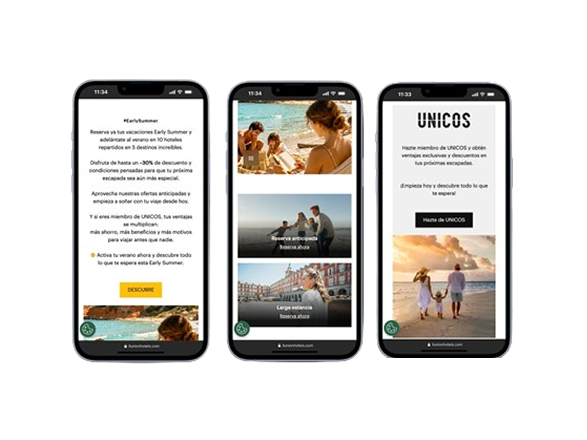
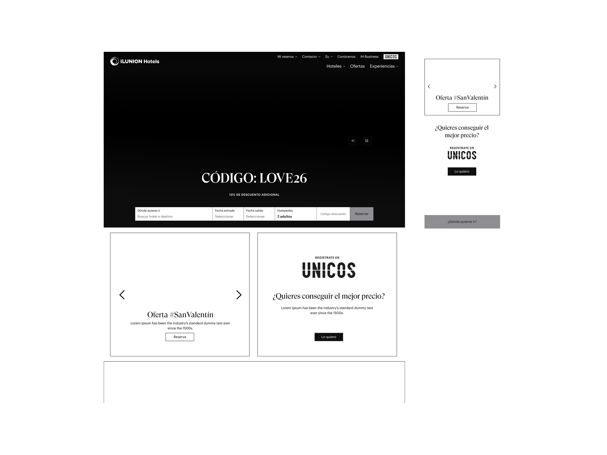
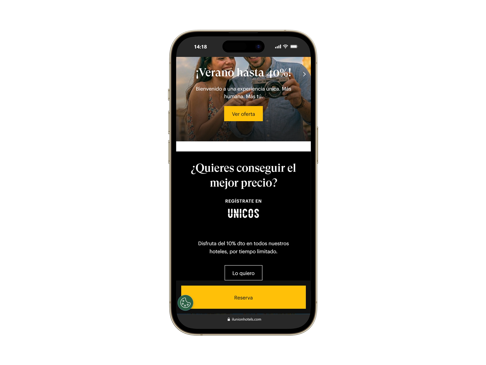
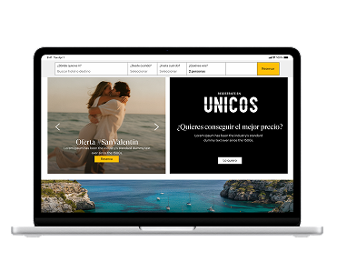

Responsabilidades directas
Con quién colaboré
Gestioné el ciclo completo de manera autónoma — diagnóstico, propuesta y presentación directa a comité — sin intermediarios de producto entre el análisis y la toma de decisión.
ILUNION Hotels opera en un entorno digital competitivo donde el canal directo es clave para la relación y fidelización de los clientes. El sitio web representa el punto central de contacto para usuarios con alta intención de reserva — personas interesadas en la marca que buscan formalizar su estancia directamente con la cadena hotelera.
Cuando la web migró a Adobe Experience Manager (AEM), el tráfico siguió llegando. Pero algo había cambiado. El rendimiento del canal directo cayó sin causa técnica aparente. El sistema funcionaba. La conversión, no.
Yo era la responsable de producto digital: diseño UX/UI, CRO, y la coordinación directa con el equipo de desarrollo. El momento pedía diagnóstico, no suposiciones.
Identificar qué estaba generando el abandono, priorizarlo por impacto de negocio real, y diseñar una solución que funcionara dentro de los constraints reales de AEM — sin comprometer la identidad de marca y sin inventar métricas para justificar decisiones.
El reto requería ownership end-to-end: cualquier propuesta tenía que llegar directamente a la dirección con suficiente solidez argumentativa para aprobarse en comité sin pasos intermedios.
Empecé donde estaban los datos. Con Microsoft Clarity analicé scroll maps, heatmaps y grabaciones de sesión reales. El diagnóstico fue inmediato y contundente:
Completé el análisis con Adobe Analytics para entender los patrones de navegación y el punto exacto de abandono. Y añadí benchmarking funcional — no estético — contra otras cadenas hoteleras y OTAs referentes: cómo presentan precio, disponibilidad y valor en cada paso del journey para activar intención de compra.

El insight clave cambió el enfoque de todo el proyecto. El problema no era que el diseño fuera feo o antiguo: el site priorizaba inspiración de marca sobre el comportamiento real del usuario.
Insight: Un usuario que llega desde paid media con intención de compra alta no quiere explorar la marca — quiere comprobar disponibilidad y precio lo antes posible. El site le exigía explorar cuando él venía a encontrar. Hipótesis: Si reducimos el peso del contenido de branding en el primer scroll y priorizamos el producto visible (oferta, precio, CTA), el usuario iniciará búsqueda antes y la tasa de conversión mejorará. Esta hipótesis era validable con datos: teníamos benchmarking de cadenas referentes y scroll maps que mostraban exactamente dónde se producía el abandono.
Traduje el diagnóstico en un documento interno con 12 mejoras priorizadas según su impacto directo en conversión. No era una lista de deseos de diseño — era una propuesta de negocio con criterio. Lo escribí, lo argumenté con datos y lo presenté directamente a la dirección.
Fue aprobado en comité.
El trade-off real del proyecto: branding aspiracional vs. ecommerce eficiente. Dos objetivos legítimos en conflicto dentro del mismo componente.
Decisión: Priorizar la conversión sobre el protagonismo visual de marca en los puntos de entrada desde paid media. No porque el branding no importe — sino porque un usuario que abandona antes de ver el producto no puede convertir, independientemente de lo cuidada que sea la experiencia visual. UNICOS no desapareció: se reposicionó como bloque secundario con propuesta de valor concreta, presente pero sin bloquear el funnel. La restricción técnica de AEM (no permitía reducir texto solo en mobile) condicionó decisiones de jerarquía que en retrospectiva mejoraron el resultado: al no poder resolver con tipografía, resolvimos con estructura.
Diseñé una arquitectura distinta para desktop y mobile, porque el comportamiento en cada uno es diferente.



Trabajé directamente con el equipo de desarrollo en entorno staging. Presentación en comité interno. Lanzamiento a producción.
Tras el lanzamiento, los datos de Clarity mostraron algo inesperado: en mobile, los usuarios deslizaban sobre el selector de fechas en lugar de hacer clic. El patrón de interacción táctil no era el que habíamos diseñado.
Lo detecté, lo documenté y coordiné el desarrollo de la interacción de swipe a posteriori. No fue un fallo de diseño — fue el proceso funcionando como debe. La diferencia entre hacer una entrega y hacer producto es exactamente esta: seguir mirando después de publicar.
📌 Los datos detallados de conversión son confidenciales. Los resultados reflejan seguimiento post-implementación con Adobe Analytics y observaciones directas del equipo de negocio y de producto.
El brief no es el problema. La dirección pedía "mejorar el componente de ofertas". El problema real era una desalineación estructural entre la lógica editorial del site y la intención transaccional del tráfico. Aprendí a cuestionar el brief antes de abrir Figma.
Lanzar no es terminar. El comportamiento de swipe en mobile que detecté post-lanzamiento no estaba en el diseño original. Si hubiera cerrado el proyecto en el deploy, ese problema habría quedado sin resolver. El seguimiento post-lanzamiento no es un extra — es parte del proceso.
Los constraints técnicos son datos de diseño. AEM no permitía reducir texto solo en mobile. En lugar de ignorarlo o bloquearse, esa limitación condicionó decisiones de jerarquía y priorización de contenido que mejoraron el resultado final.
Una propuesta argumentada vale más que tres opciones. Liderar y defender el diseño directamente ante comités de decisión me obligó a conectar cada decisión con su impacto en conversión e ingresos. Esa habilidad de comunicar en lenguaje de negocio es lo que hace que las propuestas se aprueben.